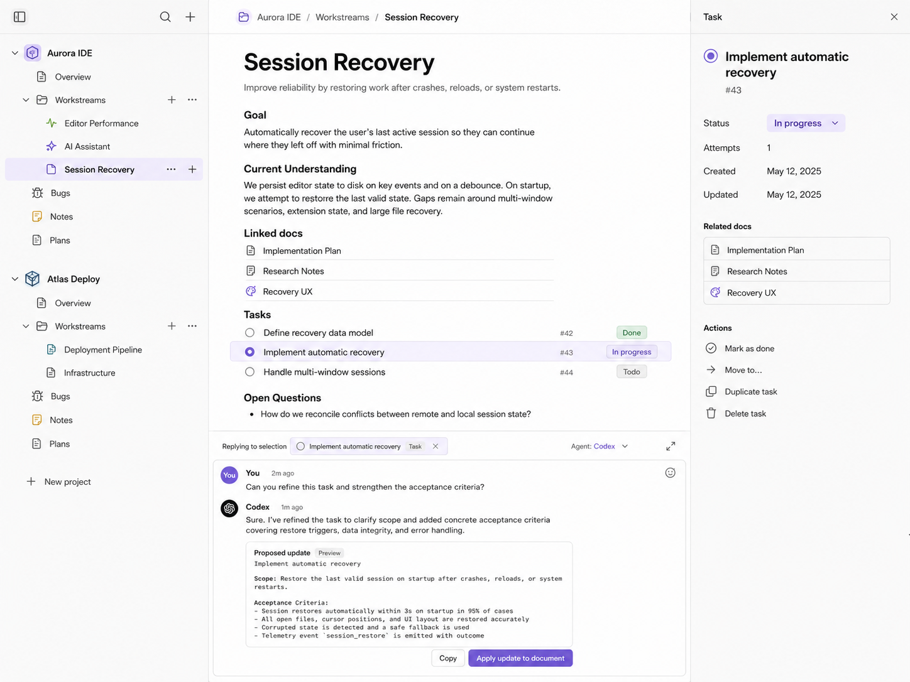
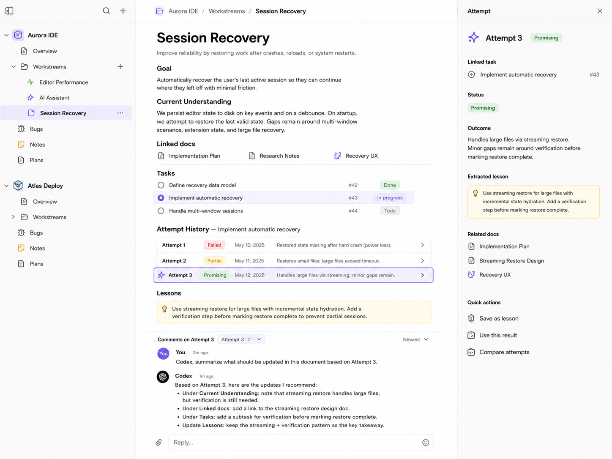
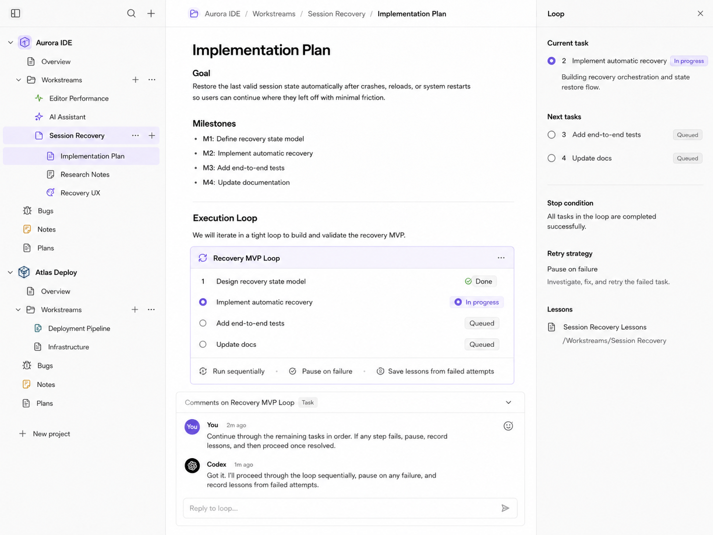
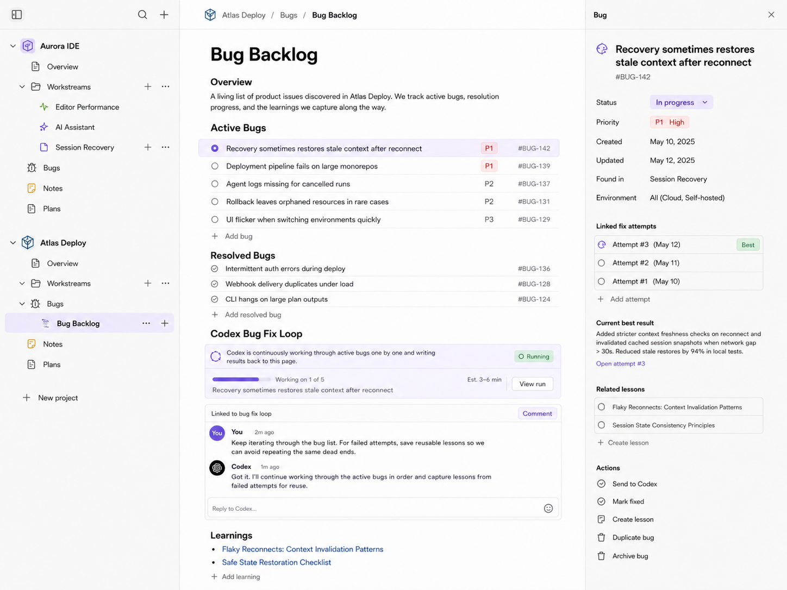

完整产品记录
包含最终 Product Spec、用户原始需求归纳、关键设计轮次，以及当前 UI Mock。内部推理过程未包含。
Context Center v0.6 — 最终产品 Spec
1. 产品定义
Context Center 是一个 Document-first、Agent-aware 的项目工作空间。
用户和 AI 在同一棵可编辑的文档树中维护项目背景、Workstream、计划、Task、Bug、结果和经验；需要执行代码工作时，再把选中的 Task 或内容委派给 Codex、Claude Code 等 Coding Agent。
Context Center 本身不是新的 Coding Agent，也不是通用项目管理系统或 Workflow Builder。
2. 设计原则
- 文档优先：默认内容是自由编辑的 Markdown；结构只在需要状态、查询或 Action 时局部出现。
- Project 也是文档体验：Project 是特殊根文档，同时绑定 Workspace 路径和 Agent 配置。
- 选择就是 Context：任何文字、Block 或 Widget 都可以被引用到 Composer。
- 外部 Agent 负责执行：复杂代码与研究交给 Codex/Claude Code；产品负责上下文、Task、Attempt 与知识回流。
- 结果回到文档：Task 状态、结果、Lesson 和新 Context 都写回当前文档树。
- 渐进披露：Agent 从根文档开始，按相对链接和显式引用逐步读取子文档。
- 少而稳的 Widget：不把所有内容数据库化。
3. 核心内容模型
Project
Project 是左侧树中的顶层节点，表现为特殊根文档。
它额外绑定：
- 项目名称；
- 代码 Workspace/Repository 路径；
- 默认或可用 Coding Agent；
- 根文档位置；
- 少量项目配置。
用户打开 Project 时，看到的仍然是一篇可自由编辑的根页面。
Document
所有长期内容都以 Document 表达：
- Product Definition；
- Architecture；
- Workstream；
- Plan；
- Research Notes；
- Bug Backlog；
- Lessons；
- Task 说明；
- Context 文件。
Document 支持任意 Markdown、嵌套子文档和相对链接。Workstream 不是独立对象，只是具有 Workstream 语义和 Icon 的 Document。
Widget
Widget 是文档中的局部增强块。首版只需要：
- Task / Task List；
- Session Attempt；
- Execution Loop；
- 必要的轻量 Project/Agent Action。
Widget 可以引用外部结构化记录，但在文档中必须有可读的降级表示。普通用户不需要直接操作 YAML/JSON。
Comment / Message
Message 不作为独立导航对象。它始终锚定到：
- 一段选中文字；
- 一个 Block；
- 一个 Task 行；
- 一个 Attempt；
- 一个 Loop；
- 或整个当前页面。
Lesson
Lesson 是从一次或多次 Attempt 中得到的可复用认识。它可以是普通文档段落，也可以是带来源引用的轻量块。
4. 信息架构
左侧只是一棵多 Project 文档树：
Aurora IDE
Overview
Architecture
Session Recovery
Implementation Plan
Research Notes
Recovery UX
Bugs
Atlas Deploy
Overview
Deployment Pipeline
Infrastructure
Bug Backlog
要求：
- Project 为顶层节点；
- 文档可以任意嵌套；
- hover 时出现新增子文档和更多操作；
- 不设置 Tasks、Sessions、Runs、Workflows 等独立主导航；
- 用 Icon 表达 Project、Workstream、Bug、Plan 等语义；
- 支持文档搜索和快速创建。
5. 主界面
左侧：Document Tree
紧凑、接近 Notion。支持展开、折叠、新增、移动、重命名、删除和切换 Project。
中间：Editable Document Canvas
- 页面始终处于可编辑状态；
- 不显示 Edit 按钮；
- 普通内容保持正文、标题、列表、引用和代码块；
- 子文档默认以一行链接呈现；
- 只有 Task、Attempt、Loop 等需要交互的内容使用 Widget。
右侧：Contextual Inspector
Inspector 默认关闭，只在选中 Widget 或结构化内容时出现。
它显示该对象必要的状态、关联和 Action，不重复展示整个文档，也不承担复杂 Session 或 Diff 管理。
Composer / Artifact Comment
用户选择任意文本或 Block 后：
- 选择内容成为 Composer 中的引用 Chip；
- 用户添加 Comment 或 Instruction；
- 选择绑定的 Agent；
- 消息携带 Project、文档路径、选中内容和周边上下文；
- Agent 回复，或对原位置提出/执行局部更新。
同一套交互适用于正文、Task、Attempt、Loop 和整个页面。
6. Task 能力
Task 采用渐进结构：
- 普通 Markdown checkbox；
- 需要状态或 Action 时升级为 Task Widget；
- 内容复杂时可以拥有独立子文档。
Task Widget 的字段尽量可选，首版只保留实际需要的状态、依赖、关联文档、Agent 与 Action。
用户可以：
- 从选中文本生成 Task；
- 在文档内新增或调整 Task；
- 用 Comment 让 Agent 改写 Task；
- 委派给 Codex/Claude Code；
- 查看多次 Attempt；
- 选择最好结果；
- 将结果和 Lesson 写回文档。
7. Session Attempt
一次 Task 委派产生一个 Attempt，Attempt 对应一个外部 Coding Agent Session 的结果记录。
Context Center 只关注：
- 当前状态；
- 结果摘要；
- 关联 Task；
- 使用的关键文档；
- 失败/部分成功原因；
- 提取出的 Lesson；
- 是否被选为当前最佳结果。
不展示完整 Transcript、Tool Calls、代码 Diff 或执行 Timeline。
一个 Task 可以：
- Retry；
- 创建新的 Attempt；
- 比较多个结果摘要；
- 选择一个结果继续；
- 从失败 Attempt 中保存 Lesson。
8. Execution Loop
Loop 是文档中的轻量 Widget，用于把当前文档中的一组 Task 或 Bug 按顺序委派给 Coding Agent。
V1 支持：
- 顺序执行；
- 显示当前 Task 与后续队列；
- 单 Task 多次 Retry；
- 失败或需要澄清时暂停；
- 用户 Stop；
- 完成后继续下一项；
- 将状态、结果和 Lesson 写回文档。
Loop 不是 DAG，也不是通用 Workflow Builder。
Bug Fix Loop
Bug Backlog 本身是一篇普通文档。Bug 可以是简单行或 Widget。Loop 持续选择下一条 Bug，委派给 Codex，记录 Attempt，成功后标记完成，失败后保留结果并提取经验。
9. Context 组合
默认 Context 来自：
- 当前 Project 根文档；
- 当前页面与祖先页面；
- 选中内容；
- 当前 Task/Loop；
- 显式引用的子文档或 Section；
- 已关联的 Lesson。
系统不提供复杂 Context Pack 管理页面。启动 Agent 前只显示紧凑的“Agent 将看到什么”预览，并允许添加或移除引用。
10. Coding Agent 集成
Context Center 提供两种方向：
从 Context Center 委派
用户从 Task、选择内容或 Loop 启动 Codex/Claude Code。产品提供上下文、接收结果，并把结果写回文档。
Coding Agent 反向更新
通过 Skill/Plugin/API，Coding Agent 可以：
- 找到 Project 根文档；
- 沿相对路径读取子文档；
- 读取指定 Task 或选中内容；
- 更新 Markdown Section；
- 新增或更新 Widget；
- 写入 Attempt 结果；
- 保存 Lesson；
- 创建子文档。
产品内置模型只承担局部、简单和可控的内容操作；复杂工作始终委派给外部 Agent。
11. 关键 User Journeys
A. 选中内容并让 Agent 更新
选择一段文字或 Task 行
→ 在 Composer 中加入引用
→ 输入修改要求
→ Agent 回复或更新原位置
B. 一个 Task 多次尝试
委派 Task
→ Attempt 1 失败
→ Retry / 调整上下文
→ Attempt 2 部分成功
→ Attempt 3 最佳
→ 选择结果
→ 保存 Lesson
→ 更新 Task 与文档
C. 多 Task 自动执行
文档内整理 Task 顺序
→ 插入 Loop Widget
→ 启动
→ 逐项委派
→ 失败暂停、重试或澄清
→ 状态和结果持续写回
D. 持续修复 Bug
在 Bug Backlog 文档增加 Bug
→ Bug Fix Loop 选择下一项
→ Codex 尝试修复
→ 写回结果与 Attempt
→ 成功则完成，失败则保留 Lesson
12. Responsive 要求
- 桌面：文档树 + 文档画布 + 按需 Inspector。
- 移动：文档树变为抽屉；Inspector 变为底部 Sheet；Composer 固定底部；正文保持全宽可读。
- 选择引用与 Comment 在移动端仍然是一等交互。
13. MVP 范围
必须包含
- 多 Project；
- Notion 式嵌套文档树；
- 始终可编辑的 Markdown 页面；
- 一行式子文档链接；
- 任意选择引用与 Agent Comment；
- Task Widget 与 Task List；
- Codex/Claude Code 委派；
- Task 多 Attempt；
- Lesson 保存；
- 顺序 Loop；
- Bug Fix Loop；
- Coding Agent 反向更新文档的接口；
- 移动端基本可用。
不在当前范围
- 用户、团队、权限、Share；
- Diff 管理和代码审查；
- Session 内部执行浏览器；
- 通用 Workflow Builder；
- 复杂 Dashboard；
- 强制完整 Task Schema；
- 所有内容 Widget 化。
14. 验收标准
- 左侧可以同时展示两个 Project 及其嵌套文档。
- 每个文档节点 hover 可新增子文档或打开更多操作。
- 页面无需进入 Edit 模式即可直接修改。
- 子文档可作为紧凑的一行链接插入正文。
- 用户可选择任意文字、Block 或 Task 行，并在 Composer 中引用。
- Agent 回复与局部更新始终保留选择位置和文档上下文。
- 一个 Task 可拥有多个 Attempt，并可标记当前采用结果。
- 用户可从 Attempt 保存 Lesson，并在后续 Task 中引用。
- 一个文档中的多 Task 可组成顺序 Loop。
- Bug Backlog 可由持续 Loop 逐项处理并写回结果。
- Context Center 不要求用户查看 Diff、Tool Call 或完整 Session Transcript。
- Codex/Claude Code 可以通过集成读取并更新同一套 Project 文档。
Context Center — 用户原始需求归纳
本文归纳本次 Session 中用户反复提出、补充和纠正的需求。它保留用户意图，但不包含模型的内部推理过程，也不把已经被否定的方案写成最终产品能力。
1. 产品目标
Context Center 是一个面向软件项目的 Project Memory、Context Management、Task Coordination 与 Coding Agent 使用界面。
它不是新的 Coding Agent，也不是复杂的 Workflow Builder。它负责让人和 AI 共同维护项目内容，并把合适的任务与上下文委派给 Codex、Claude Code 等现有 Coding Agent。
产品需要极其容易使用。日常体验应当更接近 Notion：打开项目文档、编辑内容、选择一段内容并和 AI 讨论；而不是进入多个结构化管理页面填写表单。
2. 项目与文档
- 支持多个 Project。
- 左侧最顶层节点是 Project。
- Project 可以理解为一种特殊的根文档，但额外绑定项目名称、代码 Workspace 目录、Agent 等结构化信息。
- 除 Project 外，Workstream、Context、Plan、Bug Backlog、Research、Knowledge 等都应当是普通文档，而不是独立产品模块。
- 文档采用类似 Notion 的嵌套树结构，并始终可以直接编辑。
- 子文档应当以紧凑的一行文档链接嵌入，而不是大卡片。
- 文档内容以 Markdown/freeform 内容为主；只有需要状态、聚合或 Action 时才使用 Widget。
- 文档与子文档最好能够映射到文件系统和相对路径，便于 portability、reuse 和 progressive context disclosure。
3. 左侧导航
- 左侧只显示 Project 与嵌套文档树，不需要 Home、Tasks、Sessions、Runs、Workflows 等独立主导航。
- 交互应参考 Notion：展开/折叠、hover 出现
+和更多菜单、快速新增子文档、移动、删除等。 - 不同用途可以用不同 Icon 表达，例如 Project、Workstream、Bug、Plan，但不要依赖额外目录名或类型标签制造结构。
- Mock 中至少展示两个 Project。
4. 文档编辑与 AI 评论
- 文档永远可编辑，不显示显式 Edit 按钮。
- 页面上的任何内容都可以被选择：几个单词、一段文字、一个 Paragraph、一个 Block、一个 Task 行、一个 Session/Attempt Widget。
- 选中内容后，可以像普通聊天引用文本一样，把选择加入 Composer，再附加 Comment/Instruction 并发送给绑定的 Coding Agent。
- 消息必须携带当前 Project、文件路径、选择内容和必要的周边上下文。
- Agent 可以回复，也可以对选择位置或当前文档进行局部更新。
- 这种交互不是“Task Discussion”专用功能，而是适用于任意文档内容的通用 Artifact Comment 模式。
5. Task
- Task 不必强制成为复杂结构化对象。
- 最轻形式可以是 Markdown checkbox。
- 需要状态和 Action 时可以是 Task Widget。
- 较复杂的 Task 也可以直接成为一个子文档。
- Task Widget 可在右侧展开少量结构化详情，例如状态、依赖、关联文档和可执行 Action。
- 用户可以从当前内容生成 Task，也可以把 Task 委派给 Codex 或 Claude Code。
6. Coding Agent Session 与 Attempt
- Session 指外部 Coding Agent 的 Session，而不是 Context Center 自己实现的复杂 Agent Runtime。
- 用户不需要查看 Session 内部 Tool Calls、完整 Transcript、文件 Diff 或执行 Timeline。
- 一个 Task 可以尝试多次；每次委派形成一个 Attempt/Session 结果。
- Attempt 可以失败、部分成功、较有希望或成功。
- 用户可以继续重试，也可以在多个 Attempt 中选择最好的结果。
- 系统需要读取结果摘要，并允许 Agent 把结果写回 Task、当前文档或新的子文档。
7. Lesson 与 Project Knowledge
- 失败或部分成功的 Attempt 不是废品。
- 用户或 Agent 可以从 Attempt 中提取 Lesson、Constraint、Discovery 或可复用 Knowledge。
- Lesson 应当写入项目文档或 Knowledge 文档，并保留来源引用。
- 后续 Task、Loop 或 Agent Session 可以复用这些知识，避免重复失败。
- 产品重点是 Session 结果如何进入 Project Memory，而不是管理 Session 的内部执行细节。
8. 多 Task Loop
- 一个文档可以包含多个 Task。
- 用户可以把这些 Task 组织成一个轻量 Loop，让 Coding Agent 按顺序逐个执行。
- Loop 是文档内的 Widget，不是通用 Workflow Builder。
- 首版重点是顺序执行、失败暂停、需要澄清时暂停、可重试、结果写回、Lesson 捕获。
- Bug Backlog 可以使用类似机制：文档持续新增 Bug，Codex Loop 不断处理下一项并把结果与经验写回。
9. Context 管理
- Context 不应当成为复杂的结构化数据录入页面。
- Context 主要来自当前文档、祖先文档、选中内容、显式引用的子文档以及 Task/Widget 关联。
- 文档树和相对路径支持 progressive disclosure：Agent 先读根文档，再按需要读取相关子文档。
- 运行 Task 时可以有一个轻量预览，说明 Agent 将看到哪些页面或引用，但不需要复杂 Context Pack 管理界面。
10. Agent 能力边界
- Context Center 内部可以使用轻量模型完成局部编辑、总结、提取 Task 或 Context 等简单操作。
- 复杂研究、代码实现和长期执行应委派给 Codex、Claude Code 等外部 Coding Agent。
- 还需要提供 Skill/Plugin/API，使 Coding Agent 能反向操作 Context Center：找到 Project 根文档、读取相对路径文档、更新内容、更新 Widget 状态、写入 Attempt 结果与 Lesson。
11. 明确不做或暂不做
- 不做用户、团队、权限、Share 系统。
- 不做代码 Diff 管理。
- 不做完整 Session Transcript、Tool Call 或 Run Timeline 浏览器。
- 不做复杂 Dashboard。
- 不做独立的 Message、Run、Workflow、Proposal Inbox 主页面。
- 不做通用 DAG/Workflow Builder。
- 不要求所有内容都结构化。
- 不要求用户直接编辑 YAML/JSON。
12. UI 与交付
- UI 要紧凑、安静、接近 Notion，而不是 SaaS Dashboard。
- 主布局是左侧文档树、中间文档画布、按需出现的右侧 Inspector，以及和选择内容绑定的 Composer/Comment Thread。
- 移动端至少要能清晰查看：文档树可变为抽屉，Inspector 可变为底部 Sheet，Composer 固定在底部。
- 交付需要包含完整 Mock、最终 Product Spec、用户需求归纳以及关键设计轮次记录，并打包成一个可分享 ZIP 或单文件 HTML。
Context Center — 关键轮次与最终设计决策
本记录保留本次 Session 的关键转折：每一项包含用户提出的主要问题，以及最终沉淀到当前产品定义中的答案。它不是完整逐字 Transcript，也不包含模型内部推理。
01. 最初的 Context Center
用户要求：管理 Project、Document、Message、Task；可与 Codex/Claude Code 讨论、形成计划、生成 Task、委派执行、添加 Verifier，并考虑复杂 Workflow。
最终结论：确认产品是 Coding Agent 的高层 Context/Task 控制面，但后续 Workflow、Message 等不再作为一级产品对象。
02. 去掉 Workflow
用户纠正：Workflow 不重要，产品必须更简单、更好用，并重新审核整体设计。
最终结论：删除 Workflow Builder、DAG、自动步骤链；把重点转向 Context、Task、Session 结果与 Agent 委派。
03. Nimbalyst 与主循环
用户补充：真正核心是 Session 产生经验，自动挖掘 Context，从 Context 生成 Task，再将 Task 与合适 Context 委派给 Agent，结果重新回流。
最终结论：确立 Session → Project Memory → Task → Agent → Result → Project Memory 的闭环。
04. Chat/Composer-first 简化
用户要求：像 ChatGPT/Codex 一样，通过一个 Composer、自然语言和 Slash Command 完成常见动作，不要复杂操作面板。
最终结论：Composer 成为通用入口；结构化结果只在必要时出现。
05. 不管理 Diff 和 Session 内部细节
用户纠正：产品不需要关注代码 Diff，也不需要看 Session 的内部过程，更关心 Context 和 Task。
最终结论：删除 Diff、Tool Calls、Session Timeline 和运行细节；Session 只保留结果、状态、Attempt 与 Lesson。
06. 从结构化管理系统转向 Notion-like 文档
用户设想：如果用 Notion 来做，一个 Project 是根页面，Workstream 是子文档，Task 可以是 checkbox、Widget 或文档；Markdown + 特殊 Widget 更灵活。
最终结论：采用 Document-first、局部结构化模型；普通内容是 Markdown，Task/Session/Loop 才使用 Widget。
07. Project 是特殊根文档
用户补充：Project 有名称、Workspace 目录等结构化数据，不完全等于普通文档；但使用体验上可以是根文档。
最终结论：Project 是特殊根文档，额外绑定 Workspace 和 Agent 元数据；其余 Workstream、Context、Plan 都是文档。
08. Coding Agent 可直接维护内容
用户要求：文档和 Context 可由 Context Center Agent 或 Codex 等外部 Agent 生成；通过 Skill/Plugin 让 Codex 使用同一套内容。
最终结论：设计双向集成：Context Center 可以委派，外部 Agent 也可以反向读取和更新文档、Widget、Attempt 与 Lesson。
09. 任意 Selection 的 Artifact Comment
用户纠正：不是“Task Discussion”。页面任何几个单词、段落、Block 或 Task 行都可以被选择、引用、评论，并让 Agent 更新相应位置。
最终结论：选择引用成为最核心的 AI 协作方式；Comment 始终绑定文档路径和选中内容，而不是绑定某种对象类型。
10. Notion 式导航与紧凑文档
用户要求：左侧只显示文档树；hover 有新增与更多操作；子文档一行一个，不使用大卡片；支持多个 Project，并用 Icon 区分语义。
最终结论：主 IA 收敛成多 Project 的 Notion 式文档树，取消额外模块导航。
11. 文档始终可编辑
用户纠正：不需要 Edit 按钮，所有文档都应像 Notion 一样始终 editable。
最终结论：文档画布默认编辑态；AI 更新通过选择与 Comment 进入，不设计编辑模式切换。
12. 单 Task 多次 Attempt
用户要求：Task 的 Codex 结果可能失败，需要尝试多次、选择最好结果，并从失败 Session 中记录 Lesson。
最终结论：一个 Task 可以拥有多个 Attempt；支持 Retry、结果选择、Lesson 提取和结果写回。
13. 多 Task Loop
用户要求：文档中的多个 Task 可以组成 Loop，依次执行，支持自动开发较大功能。
最终结论：增加轻量顺序 Loop Widget；失败或需要澄清时暂停；不是通用 Workflow Builder。
14. Bug Backlog 持续修复
用户要求：Bug 文档可以持续新增 Bug，Codex Session/Loop 不断修复，并读取结果、更新页面。
最终结论：Bug Backlog 仍是普通文档；Bug Fix Loop 逐项产生 Attempt，把状态、结果和 Lesson 写回。
15. 删除用户与 Share 系统
用户要求：当前无需用户、团队、Share 等能力，它们只会分散注意力。
最终结论：MVP 明确排除用户、权限和 Share，集中完成文档、Context、Task 与 Agent 闭环。
16. 当前 Mock 基线
最终 Mock 表达：
- 两个 Project 的紧凑文档树；
- Workstream/Plan/Bug 等作为文档；
- 任意内容选择与 Agent Comment；
- Task 右侧 Inspector；
- 多 Attempt 与 Lesson；
- 多 Task Loop；
- Bug Fix Loop。
这些屏幕构成 v0.6 Spec 的 UI 基线。
当前 UI Mock



